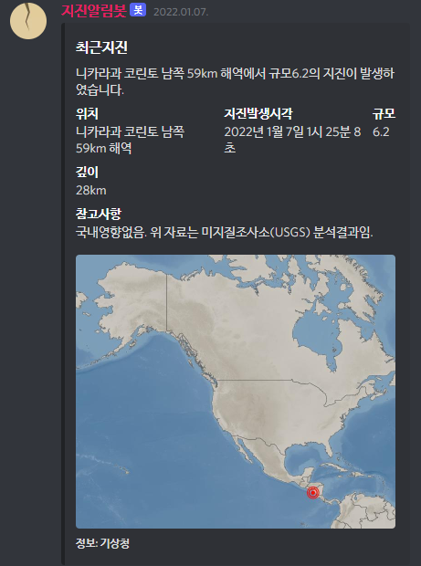

API를 이용해 데이터를 받아오는 연습을 해보기 위해서 어떤 데이터를 사용할지 고민하던 중, 지진 정보를 받아와보면 괜찮겠다는 생각이 들어서 기상청 지진정보 OpenAPI를 사용해보게 되었습니다.
초기에는 지진 알림 홈페이지나 프로그램을 만들어보려 했지만, 디스코드 봇을 개발하면 실시간 알림을 손쉽게 사용할 수 있어서 디스코드 봇으로 만들어보게 되었습니다.
공공데이터포털에서 기상청 지진정보 조회 API의 사용을 신청하고, Node.js의 Request 라이브러리를 이용해 API 데이터를 받아오는 법을 익혔습니다.
Discord.js는 Node.js에서 사용할 수 있는 Discord API 라이브러리입니다.
Discord.js 가이드를 활용해 테스트 봇을 만들어보고, 슬래시 명령어를 생성하고 명령어에 응답하는 것 까지 차근차근 시도해보았습니다.
어느정도 사용법을 익히고, 본격적으로 API와 연계된 지진알림봇을 만들기 시작했습니다.
구현이 필요한 것들 중 가이드에 없는 부분도 있었기 때문에, Discord.js 공식 문서나 Google 검색을 많이 활용했습니다.
가장 처음 작업한 것은 명령어들입니다. '/봇정보'를 입력하면 지진알림봇의 간단한 소개를, '/최근지진'을 입력하면 가장 최근에 발생한 지진의 정보를 전송합니다.
디스코드에 명령어가 잘 적용되어 있는 모습
명령어 처리가 잘못되어서 얻은 오류들...
'/최근지진' 명령어 처음 성공
'/최근지진' 명령어 응답의 최종 완성된 형태
API 일일 사용 가능 트래픽 횟수가 10만회로 정해져 있었기 때문에, 실시간 알림을 위해서는 API 통신과 디스코드 응답 프로세스를 분리하고, 통신은 계속 주기적으로 진행, API에서 얻은 데이터는 봇 어디서나 액세스할 수 있도록 구조를 변경해야 했습니다.
중복 알림을 방지하기 위한 처리까지 해주고, 통보 종류에 따라 메시지도 다르게 발송되도록 처리를 해주었습니다.
드론 제작 프로젝트의 계획을 라즈베리파이 사용에서 아두이노 사용으로 변경하면서, 라즈베리파이에서 봇을 구동하게 되었습니다.
라즈베리파이를 세팅하고, 봇의 24시간 가동을 시작했습니다.
24시간 구동 이후 실시간으로 전송된 알림들
지진알림봇 개발을 하면서, 전 세계에서 지진이 굉장히 많이 일어나고 있다는 것을 확실히 체감할 수 있었습니다.
특히, 1월 22일 일본 오이타현에서 발생한 규모 6.4의 지진은 부산에서도 약간의 흔들림을 느낄 수 있었을 정도였던 지진이었기 때문에 더 확실히 느낄 수 있었습니다.
API를 사용하는 법과, Javascript 문법 등 많은 프로그래밍 지식들을 익히고, 직접 라즈베리파이로 서버도 만들어 보아서 많은 것들을 배울 수 있었습니다.